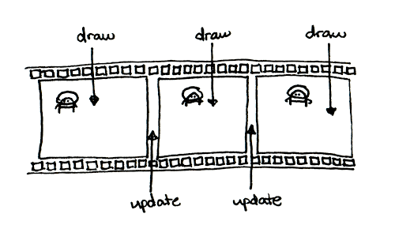
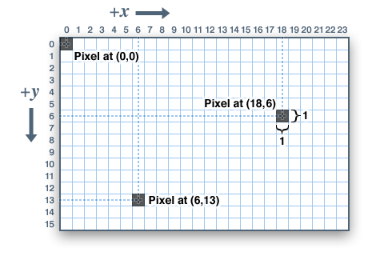
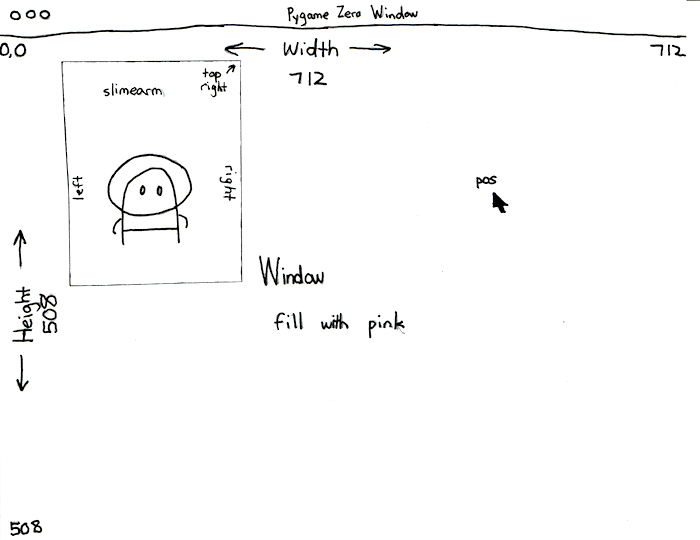
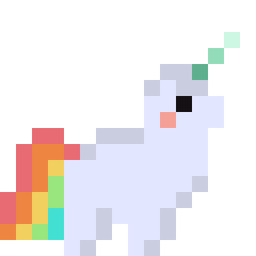
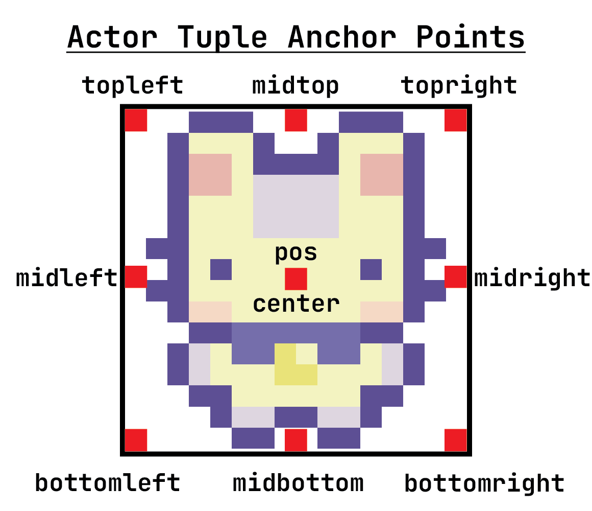
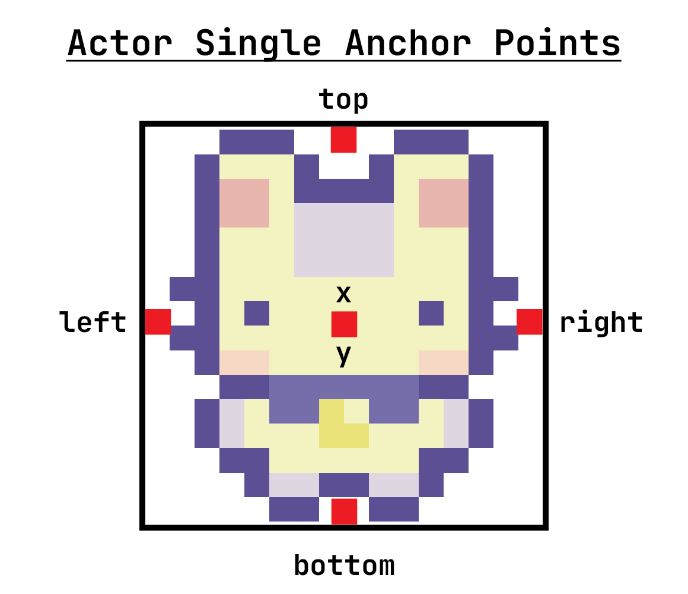

CS4040 · Unit 3: 2D Game Development
Every Pygame Zero program starts with two import lines and ends with pgzrun.go().
When the program runs, Pygame Zero calls start() once. Then draw() and update() are called over and over until the window is closed.
start() → draw() → update() → draw() → update() → …
You cannot change the names of these functions! Pygame Zero looks for these exact names.
You can think of it as an infinite flipbook that is updated between frames.

# program must start with these two lines
import pgzrun
from pgzero.builtins import *
# Pygame Constants
WIDTH = 500 # width of game window
HEIGHT = 500 # height of game window
TITLE = "Name of Game" # title in game window
# define global variables
alien = Actor("alien")
# runs once at beginning before draw()/update()
def start():
alien.pos = (200, 200) # sets initial position
# displays the new frame
def draw():
screen.clear() # clears the screen
screen.fill("darkslateblue") # fills background color
alien.draw() # draws the new sprite
# updates game state between drawing of each frame
def update():
pass # pass means do nothing, can't have empty function
pgzrun.go() # program must always end with thisstart(): called once when the game starts, before the game loop begins. Set up the game’s starting state here.update(): called repeatedly (about 60 times per second) to change the game’s state: move characters, check conditions, change variables.draw(): called repeatedly to draw the current state of the game: backgrounds, shapes and characters.A window with visual elements that lets the user interact with the code behind the scenes.
The origin (0, 0) is the top-left corner of the window. x increases to the right and y increases down, so the bottom-right corner is (WIDTH, HEIGHT).
WIDTH: constant that sets the screen widthHEIGHT: constant that sets the screen height
A tuple stores several values in parentheses, separated by commas. Positions and colors are tuples. You read one value with square brackets and an index starting at 0, but you cannot change one value: you replace the whole tuple.

| Write a color as | Example | Meaning |
|---|---|---|
| a color name string | "darkturquoise" |
any name from the Pygame Zero color list |
| an RGB tuple | (150, 0, 100) |
red = 150, green = 0, blue = 100, each from 0 to 255 |
Add text with screen.draw.text(). You can also set color, position anchor, font size, background color, word wrap and more (text tutorial).
In Pygame Zero, many things in our program are objects. An object contains:
draw()An Actor is a graphic you draw in the window, like a sprite in Scratch.

Images go in the images folder. Use the name without .png.
# one coordinate, an int: get or set
alien.x # center x
alien.y # center y
alien.top # top edge y (smallest y)
alien.bottom # bottom edge y (largest y)
alien.left # left edge x (smallest x)
alien.right # right edge x (largest x)
alien.width # width in pixels (read only)
alien.height # height in pixels (read only)

In Pygame Zero, we write almost all our code in functions. How do we keep data across functions, or across many calls to update()?
Global variables!
global KeywordThe global keyword tells Python that a variable inside a function refers to the global variable defined outside it.
You do not need global when you are… |
You do need global when you are… |
|---|---|
| only reading the variable | reassigning the variable to a new value |
| changing something inside it (an Actor’s position, appending to a list) | changing an int, float, bool, str or tuple |
Use global variables sparingly: they make programs harder to understand and debug.
An alternative to global variables: attach your own variables to an Actor with dot notation. Only use them for values that belong to that Actor.
x, y, pos, image…velocity_x